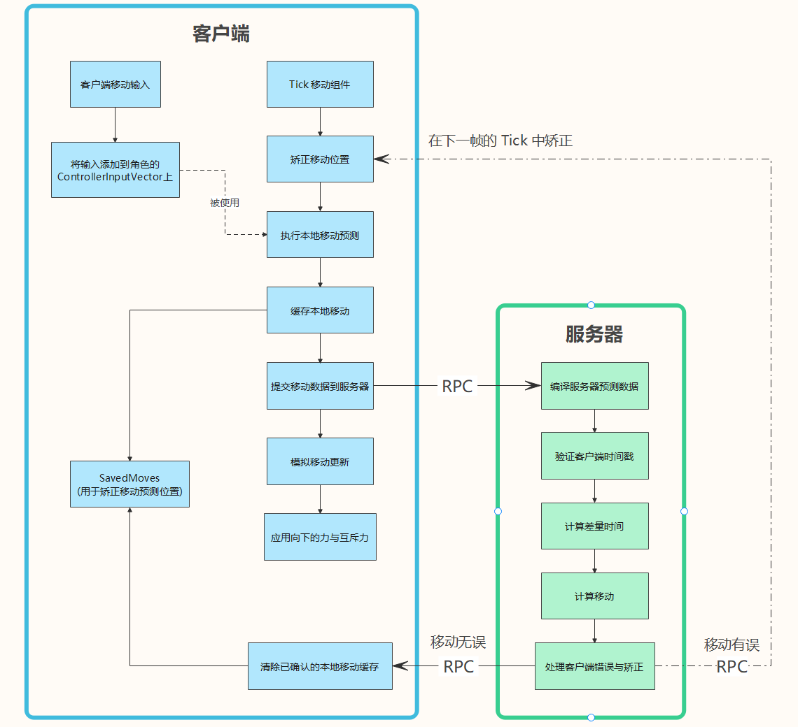
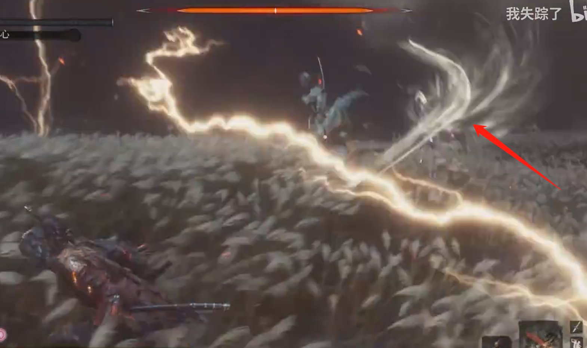

# Unreal MovementComponent 源码解析简介：本篇将从玩家的移动输入函数 AddMovementInput() 开始，探究移动组件从玩家输入到客户端本地预测，再到服务器模拟并矫正客户端移动，最后将正确的移动同步到模拟代理客户端中进行模拟。本地预测和服务器模拟移动时，自然少不了要计算不同状态下 (如：行走，飞行等) 各种因素 (如：根运动，摩擦力，玩家输入，路径追踪等) 对速度的影响，以及每帧的位移增量与旋转值的变化。模拟代理客户端的移动模拟因为其数据本就是服务器同步过来的计算好的数据，所以只需要直接平滑处理其移动即可。
接触过 UE4 开发的小伙伴应该对这个函数都不陌生，其作用即 使指定角色沿着给定向量的方向，移动一定距离。此函数是 Pawn 类中的函数，但 Pawn 并不会自动应用移动，因为 Pawn 实际上是没有移动组件的，其子类如 Character 和 DefaultPawn 则会自动处理移动输入。以下是 AddMovementInput 的源代码及解析：
AddMovementInput 1 2 3 4 5 6 7 8 9 10 11 12 13 14 15 void APawn::AddMovementInput (FVector WorldDirection, float ScaleValue, bool bForce ) UPawnMovementComponent* MovementComponent = GetMovementComponent (); if (MovementComponent) { MovementComponent->AddInputVector (WorldDirection * ScaleValue, bForce); } else { Internal_AddMovementInput (WorldDirection * ScaleValue, bForce); } }
此函数并不处理角色移动，只将传入的单位向量与缩放相乘得到的新的移动输入添加到 APawn.ControllerInputVector 中。此变量为挂起变量，等待下一帧组件更新时使用。接下来，咱看看这个挂起变量是怎么被使用的。
# TickComponent (ACharacterMovementComponent)ACharacterMovementComponent 继承于 APawnMovementComponent ，负责处理角色移动的相关逻辑。而 TickComponent 则是处理角色每帧的移动预测，移动矫正，力的应用，导航系统的更新等操作的主要函数。
ACharacterMovementComponent.TickComponent 1 2 3 4 5 6 7 8 9 10 11 12 13 14 15 16 17 18 19 20 21 22 23 24 25 26 27 28 29 30 31 32 33 34 35 36 37 38 39 40 41 42 43 44 45 46 47 48 49 50 51 52 53 54 55 56 57 58 59 60 61 62 63 64 65 66 67 68 69 70 71 72 73 74 75 76 77 78 79 80 81 82 83 84 85 86 87 88 89 90 91 92 93 94 95 96 97 98 99 100 101 102 103 void UCharacterMovementComponent::TickComponent (float DeltaTime, enum ELevelTick TickType, FActorComponentTickFunction *ThisTickFunction) const FVector InputVector = ConsumeInputVector (); if (!HasValidData () || ShouldSkipUpdate (DeltaTime)) { return ; } Super::TickComponent (DeltaTime, TickType, ThisTickFunction); if (!HasValidData ()) { return ; } const bool bIsSimulatingPhysics = UpdatedComponent->IsSimulatingPhysics (); if (CharacterOwner->GetLocalRole () == ROLE_Authority && (!bCheatFlying || bIsSimulatingPhysics) && !CharacterOwner->CheckStillInWorld ()) { return ; } if (bIsSimulatingPhysics) { if (CharacterOwner->GetLocalRole () == ROLE_AutonomousProxy && IsNetMode (NM_Client)) { MarkForClientCameraUpdate (); } ClearAccumulatedForces (); return ; } AvoidanceLockTimer -= DeltaTime; if (CharacterOwner->GetLocalRole () > ROLE_SimulatedProxy) { SCOPE_CYCLE_COUNTER (STAT_CharacterMovementNonSimulated); const bool bIsClient = (CharacterOwner->GetLocalRole () == ROLE_AutonomousProxy && IsNetMode (NM_Client)); if (bIsClient) { FNetworkPredictionData_Client_Character* ClientData = GetPredictionData_Client_Character (); if (ClientData && ClientData->bUpdatePosition) { ClientUpdatePositionAfterServerUpdate (); } } if (CharacterOwner->IsLocallyControlled () || (!CharacterOwner->Controller && bRunPhysicsWithNoController) || (!CharacterOwner->Controller && CharacterOwner->IsPlayingRootMotion ())) { ControlledCharacterMove (InputVector, DeltaTime); } else if (CharacterOwner->GetRemoteRole () == ROLE_AutonomousProxy) { MaybeUpdateBasedMovement (DeltaTime); MaybeSaveBaseLocation (); if (CharacterMovementCVars::NetEnableListenServerSmoothing && !bNetworkSmoothingComplete && IsNetMode (NM_ListenServer)) { SmoothClientPosition (DeltaTime); } } } else if (CharacterOwner->GetLocalRole () == ROLE_SimulatedProxy) { if (bShrinkProxyCapsule) { AdjustProxyCapsuleSize (); } SimulatedTick (DeltaTime); } if (bUseRVOAvoidance) { UpdateDefaultAvoidance (); } if (bEnablePhysicsInteraction) { SCOPE_CYCLE_COUNTER (STAT_CharPhysicsInteraction); ApplyDownwardForce (DeltaTime); ApplyRepulsionForce (DeltaTime); } }
TickComponent 函数看似简单，实则别有洞天。其主要处理移动在网络游戏中的同步机制 (大量 RPC)，移动在服务器中的计算，移动在代理客户端中的预测与矫正，移动在模拟客户端的平滑处理等。以下是 TickComponent 在客户端与服务器中交互的流程图：

以下是对上图一些细节上的补充：
服务器实际上不会定期 Tick 移动来与游戏的 Tick 循环同步，而是等待代理客户端调用 ServerMove 后，才计算本次移动数据是否正确，并修改服务器预测数据。最后在 UNetDriver::ServerReplicateActors() 中通过判断服务器预测数据的修改结果来决定不同的客户端行为。
如果服务器预测数据的 PendingAdjustment.bAckGoodMove 标记为 true ，则将调用 ClientAckGoodMove RPC 来确认移动，告知所属客户端机器上的自主代理该移动为有效。这将从所属客户端的 SavedMoves 缓冲中移除原始移动，并将其记录为 LastAckedMove ，用于编译未来的预测数据。
如果为 false ，则将调用客户端调整函数 ( ServerSendMoveResponse )，将最终矫正发送到客户端。而客户端将在移动组件下一帧 Tick 时矫正自身移动。
至于模拟代理的 Tick 移动则会在 SimulatedTick 中进行，此函数将根据服务器提供的最新移动复制数据继续移动。执行标准移动物理效果时，调用 SimulateMove 函数，然后使用 SmoothClientPosition 执行最终的验证和网络平滑。
现在我们已经对多人游戏中的角色移动网络复制有了大致上的了解。接下来我们将分析执行移动预测和矫正移动预测的具体实现方法，但在此之前我们需要先了解以下什么是 根运动 (RootMotion) 移动
# 动画根运动 RootMotion了解过 ue4 中角色的移动和动画之间的配合的同学应该都知道 动画和移动的实现实际上是分开的。也就是说，角色的动画和移动是完全可以脱离对方而单独执行的，即 将两大系统互相解耦 (但解耦归解耦，动画的执行还是基于移动的，否则动画就会显得很突兀)。
试想一下：如果有一个非常复杂的移动 (通常是释放技能的运动)，如只狼中 "心中的一心"(Boss) 的技能，其动作大致可描述为：加速飞起后减速停在空中挥舞剑气后向下加速沿曲线劈砍 (如下图)。像这种复杂而精细的技能在动作游戏中并不少见，通过纯计算处理这些移动显然是不合适的 (首先确定移动函数的成本过高，其次质量可能也不尽人意，因为函数可能并不能完全模拟设计师想要的技能轨迹)。

为了应对这种复杂情况，unreal 内置了 "RootMotion" 的解决方案。即 动画的根运动可以影响胶囊体移动的速度，从而改变胶囊体的运动轨迹。实现方法即 在做动画时，不同的动画帧需要确定此时刻动作的根所在的位置，而这个根位置的移动将以 "RootMotion" 的方式被计算成速度并应用到胶囊体的移动中。其实现类似于在动画中添加了一条确定位移的曲线，以避免我们对复杂位移的速度变化的计算。
所以一般比较简单的动作都无需使用 "RootMotion"，通常是固定动作的根 而通过移动组件根据移动状态的不同采取不同的计算角色移动的策略。
# 客户端移动预测# ControlledCharacterMove此函数主要计算玩家输入对角色加速度的影响，并用算出来的加速度作为参数调用 ReplicateMoveToServer 函数，以执行本地移动预测，提交移动数据到服务器等操作。
ControlledCharacterMove 1 2 3 4 5 6 7 8 9 10 11 12 13 14 15 16 17 18 19 20 21 22 23 24 25 26 void UCharacterMovementComponent::ControlledCharacterMove (const FVector& InputVector, float DeltaSeconds) { SCOPE_CYCLE_COUNTER (STAT_CharUpdateAcceleration); CharacterOwner->CheckJumpInput (DeltaSeconds); Acceleration = ScaleInputAcceleration (ConstrainInputAcceleration (InputVector)); AnalogInputModifier = ComputeAnalogInputModifier (); } if (CharacterOwner->GetLocalRole () == ROLE_Authority) { PerformMovement (DeltaSeconds); } else if (CharacterOwner->GetLocalRole () == ROLE_AutonomousProxy && IsNetMode (NM_Client)) { ReplicateMoveToServer (DeltaSeconds, Acceleration); } }
# ReplicateMoveToServer此函数将尝试合并新移动，并调用 PerformMovement 执行本地移动。如果到达差量时间，则调用 CallServerMove 将移动提交到服务器
ReplicateMoveToServer 1 2 3 4 5 6 7 8 9 10 11 12 13 14 15 16 17 18 19 20 21 22 23 24 25 26 27 28 29 30 31 32 33 34 35 36 37 38 39 40 41 42 43 44 45 46 47 48 49 50 51 52 53 54 55 56 57 58 59 60 61 62 63 64 65 66 67 68 69 70 71 72 73 74 75 76 77 78 79 80 81 82 83 84 85 86 87 88 89 90 91 92 93 94 95 96 97 98 99 100 101 102 103 104 105 106 107 108 109 110 111 112 113 114 115 116 117 118 119 120 121 122 123 124 125 126 127 128 129 130 131 132 133 134 135 136 137 138 139 140 141 142 143 144 145 146 147 void UCharacterMovementComponent::ReplicateMoveToServer (float DeltaTime, const FVector& NewAcceleration) DeltaTime = ClientData->UpdateTimeStampAndDeltaTime (DeltaTime, *CharacterOwner, *this ); FSavedMovePtr OldMove = NULL ; if ( ClientData->LastAckedMove.IsValid () ) { const int32 NumSavedMoves = ClientData->SavedMoves.Num (); for (int32 i=0 ; i < NumSavedMoves-1 ; i++) { const FSavedMovePtr& CurrentMove = ClientData->SavedMoves[i]; if (CurrentMove->IsImportantMove (ClientData->LastAckedMove)) { OldMove = CurrentMove; break ; } } } FSavedMovePtr NewMovePtr = ClientData->CreateSavedMove (); FSavedMove_Character* const NewMove = NewMovePtr.Get (); if (NewMove == nullptr ) { return ; } NewMove->SetMoveFor (CharacterOwner, DeltaTime, NewAcceleration, *ClientData); const UWorld* MyWorld = GetWorld (); if (const FSavedMove_Character* PendingMove = ClientData->PendingMove.Get ()) { if (PendingMove->CanCombineWith (NewMovePtr, CharacterOwner, ClientData->MaxMoveDeltaTime * CharacterOwner->GetActorTimeDilation (*MyWorld))) { SCOPE_CYCLE_COUNTER (STAT_CharacterMovementCombineNetMove); const FVector OldStartLocation = PendingMove->GetRevertedLocation (); const bool bAttachedToObject = (NewMovePtr->StartAttachParent != nullptr ); if (bAttachedToObject || !OverlapTest (OldStartLocation, PendingMove->StartRotation.Quaternion (), UpdatedComponent->GetCollisionObjectType (), GetPawnCapsuleCollisionShape (SHRINK_None), CharacterOwner)) { FScopedMeshBoneUpdateOverride ScopedNoMeshBoneUpdate (CharacterOwner->GetMesh(), EKinematicBonesUpdateToPhysics::SkipAllBones) ; FScopedMovementUpdate ScopedMovementUpdate (UpdatedComponent, EScopedUpdate::DeferredUpdates) ; UE_LOG (LogNetPlayerMovement, VeryVerbose, TEXT ("CombineMove: add delta %f + %f and revert from %f %f to %f %f" ), DeltaTime, PendingMove->DeltaTime, UpdatedComponent->GetComponentLocation ().X, UpdatedComponent->GetComponentLocation ().Y, OldStartLocation.X, OldStartLocation.Y); NewMove->CombineWith (PendingMove, CharacterOwner, PC, OldStartLocation); if (PC) { CharacterOwner->FaceRotation (PC->GetControlRotation (), NewMove->DeltaTime); } SaveBaseLocation (); NewMove->SetInitialPosition (CharacterOwner); if (ClientData->SavedMoves.Num () > 0 && ClientData->SavedMoves.Last () == ClientData->PendingMove) { const bool bAllowShrinking = false ; ClientData->SavedMoves.Pop (bAllowShrinking); } ClientData->FreeMove (ClientData->PendingMove); ClientData->PendingMove = nullptr ; PendingMove = nullptr ; } else { UE_LOG (LogNetPlayerMovement, Verbose, TEXT ("Not combining move [would collide at start location]" )); } } else { UE_LOG (LogNetPlayerMovement, Verbose, TEXT ("Not combining move [not allowed by CanCombineWith()]" )); } } Acceleration = NewMove->Acceleration.GetClampedToMaxSize (GetMaxAcceleration ()); AnalogInputModifier = ComputeAnalogInputModifier (); CharacterOwner->ClientRootMotionParams.Clear (); CharacterOwner->SavedRootMotion.Clear (); PerformMovement (NewMove->DeltaTime); NewMove->PostUpdate (CharacterOwner, FSavedMove_Character::PostUpdate_Record); if (CharacterOwner->IsReplicatingMovement ()) { check (NewMove == NewMovePtr.Get ()); ClientData->SavedMoves.Push (NewMovePtr); const bool bCanDelayMove = (CharacterMovementCVars::NetEnableMoveCombining != 0 ) && CanDelaySendingMove (NewMovePtr); if (bCanDelayMove && ClientData->PendingMove.IsValid () == false ) { const float NetMoveDelta = FMath::Clamp (GetClientNetSendDeltaTime (PC, ClientData, NewMovePtr), 1.f /120.f , 1.f /5.f ); if ((MyWorld->TimeSeconds - ClientData->ClientUpdateTime) * MyWorld->GetWorldSettings ()->GetEffectiveTimeDilation () < NetMoveDelta) { ClientData->PendingMove = NewMovePtr; return ; } } ClientData->ClientUpdateTime = MyWorld->TimeSeconds; bool bSendServerMove = true ; if (bSendServerMove) { SCOPE_CYCLE_COUNTER (STAT_CharacterMovementCallServerMove); if (ShouldUsePackedMovementRPCs ()) { CallServerMovePacked (NewMove, ClientData->PendingMove.Get (), OldMove.Get ()); } else { CallServerMove (NewMove, OldMove.Get ()); } } } ClientData->PendingMove = NULL ; }
此函数客户端和服务器都会调用，客户端在 ReplicateMoveToServer 中调用，而服务器则在 MoveAutonomous 中调用。在客户端中，此函数需要计算因为力的作用与根运动而改变的速度，并根据计算后的速度与运动状态改变其位置，紧接着更新其旋转值，调用移动更新代理，最后缓存新的位置和速度。服务器在此之上，还需要判断本次移动与移动前的区别是否大到需要重新进行网络同步，并判断是否需要更新服务器时间戳。
PerformMovement 1 2 3 4 5 6 7 8 9 10 11 12 13 14 15 16 17 18 19 20 21 22 23 24 25 26 27 28 29 30 31 32 33 34 35 36 37 38 39 40 41 42 43 44 45 46 47 48 49 50 51 52 53 54 55 56 57 58 59 60 61 62 63 64 65 66 67 68 69 70 71 72 73 74 75 76 77 78 79 80 81 82 83 84 85 86 87 88 89 90 91 92 93 94 95 96 97 98 99 100 101 102 103 104 105 106 107 108 109 110 111 112 113 114 115 116 117 118 119 120 121 122 123 124 125 126 127 128 129 130 131 132 133 134 135 136 137 138 139 140 141 142 143 144 145 146 147 148 149 150 151 152 153 154 155 156 157 158 159 160 161 162 163 164 165 166 167 168 169 170 171 172 173 174 175 176 177 178 179 180 181 182 183 184 185 186 187 188 189 190 191 192 193 194 195 196 197 198 199 200 201 202 203 204 205 206 207 208 209 210 211 212 213 214 215 216 217 218 219 220 221 222 223 224 225 226 227 228 229 230 231 232 233 234 235 236 237 238 239 240 241 242 243 244 245 246 247 248 249 250 251 252 253 254 255 256 257 258 259 260 261 262 263 264 265 266 void UCharacterMovementComponent::PerformMovement (float DeltaSeconds) SCOPE_CYCLE_COUNTER (STAT_CharacterMovementPerformMovement); const UWorld* MyWorld = GetWorld (); if (!HasValidData () || MyWorld == nullptr ) { return ; } if (MovementMode == MOVE_None || UpdatedComponent->Mobility != EComponentMobility::Movable || UpdatedComponent->IsSimulatingPhysics ()) { if (!CharacterOwner->bClientUpdating && !CharacterOwner->bServerMoveIgnoreRootMotion) { if (CharacterOwner->IsPlayingRootMotion () && CharacterOwner->GetMesh ()) { TickCharacterPose (DeltaSeconds); RootMotionParams.Clear (); } if (CurrentRootMotion.HasActiveRootMotionSources ()) { CurrentRootMotion.Clear (); } } ClearAccumulatedForces (); return ; } bForceNextFloorCheck |= (IsMovingOnGround () && UpdatedComponent->GetComponentLocation () != LastUpdateLocation); if ( CurrentRootMotion.HasAdditiveVelocity () ) { const FVector Adjustment = (Velocity - LastUpdateVelocity); CurrentRootMotion.LastPreAdditiveVelocity += Adjustment; } FVector OldVelocity; FVector OldLocation; { FScopedMovementUpdate ScopedMovementUpdate (UpdatedComponent, bEnableScopedMovementUpdates ? EScopedUpdate::DeferredUpdates : EScopedUpdate::ImmediateUpdates) ; MaybeUpdateBasedMovement (DeltaSeconds); const bool bHasRootMotionSources = HasRootMotionSources (); if (bHasRootMotionSources && !CharacterOwner->bClientUpdating && !CharacterOwner->bServerMoveIgnoreRootMotion) { SCOPE_CYCLE_COUNTER (STAT_CharacterMovementRootMotionSourceCalculate); const FVector VelocityBeforeCleanup = Velocity; CurrentRootMotion.CleanUpInvalidRootMotion (DeltaSeconds, *CharacterOwner, *this ); } OldVelocity = Velocity; OldLocation = UpdatedComponent->GetComponentLocation (); ApplyAccumulatedForces (DeltaSeconds); UpdateCharacterStateBeforeMovement (DeltaSeconds); if (MovementMode == MOVE_NavWalking && bWantsToLeaveNavWalking) { TryToLeaveNavWalking (); } HandlePendingLaunch (); ClearAccumulatedForces (); if ( CurrentRootMotion.HasAdditiveVelocity () ) { const FVector Adjustment = (Velocity - OldVelocity); CurrentRootMotion.LastPreAdditiveVelocity += Adjustment; } if (bHasRootMotionSources && !CharacterOwner->bClientUpdating && !CharacterOwner->bServerMoveIgnoreRootMotion) { if ( CharacterOwner->IsPlayingRootMotion () && CharacterOwner->GetMesh () ) { TickCharacterPose (DeltaSeconds); if (!HasValidData ()) { return ; } if ( CharacterOwner->IsLocallyControlled () && (CharacterOwner->GetLocalRole () == ROLE_AutonomousProxy) && CharacterOwner->IsPlayingNetworkedRootMotionMontage () ) { CharacterOwner->ClientRootMotionParams = RootMotionParams; } } { SCOPE_CYCLE_COUNTER (STAT_CharacterMovementRootMotionSourceCalculate); CurrentRootMotion.PrepareRootMotion (DeltaSeconds, *CharacterOwner, *this , true ); } if ( CharacterOwner->IsLocallyControlled () && (CharacterOwner->GetLocalRole () == ROLE_AutonomousProxy) ) { CharacterOwner->SavedRootMotion = CurrentRootMotion; } } if ( CurrentRootMotion.HasOverrideVelocity () || HasAnimRootMotion () ) { if ( HasAnimRootMotion () ) { USkeletalMeshComponent * SkelMeshComp = CharacterOwner->GetMesh (); if ( SkelMeshComp ) { RootMotionParams.Set ( ConvertLocalRootMotionToWorld (RootMotionParams.GetRootMotionTransform ()) ); } { AnimRootMotionVelocity = CalcAnimRootMotionVelocity (RootMotionParams.GetRootMotionTransform ().GetTranslation (), DeltaSeconds, Velocity); Velocity = ConstrainAnimRootMotionVelocity (AnimRootMotionVelocity, Velocity); } } else { if ( DeltaSeconds > 0.f ) { SCOPE_CYCLE_COUNTER (STAT_CharacterMovementRootMotionSourceApply); const FVector VelocityBeforeOverride = Velocity; FVector NewVelocity = Velocity; CurrentRootMotion.AccumulateOverrideRootMotionVelocity (DeltaSeconds, *CharacterOwner, *this , NewVelocity); Velocity = NewVelocity; } } } devCode (ensureMsgf (!Velocity.ContainsNaN (), TEXT ("UCharacterMovementComponent::PerformMovement: Velocity contains NaN (%s)\n%s" ), *GetPathNameSafe (this ), *Velocity.ToString ())); CharacterOwner->ClearJumpInput (DeltaSeconds); NumJumpApexAttempts = 0 ; StartNewPhysics (DeltaSeconds, 0 ); if (!HasValidData ()) { return ; } UpdateCharacterStateAfterMovement (DeltaSeconds); if ((bAllowPhysicsRotationDuringAnimRootMotion || !HasAnimRootMotion ()) && !CharacterOwner->IsMatineeControlled ()) { PhysicsRotation (DeltaSeconds); } if ( HasAnimRootMotion () ) { const FQuat OldActorRotationQuat = UpdatedComponent->GetComponentQuat (); const FQuat RootMotionRotationQuat = RootMotionParams.GetRootMotionTransform ().GetRotation (); if ( !RootMotionRotationQuat.IsIdentity () ) { const FQuat NewActorRotationQuat = RootMotionRotationQuat * OldActorRotationQuat; MoveUpdatedComponent (FVector::ZeroVector, NewActorRotationQuat, true ); } RootMotionParams.Clear (); } else if (CurrentRootMotion.HasActiveRootMotionSources ()) { FQuat RootMotionRotationQuat; if (CharacterOwner && UpdatedComponent && CurrentRootMotion.GetOverrideRootMotionRotation (DeltaSeconds, *CharacterOwner, *this , RootMotionRotationQuat)) { const FQuat OldActorRotationQuat = UpdatedComponent->GetComponentQuat (); const FQuat NewActorRotationQuat = RootMotionRotationQuat * OldActorRotationQuat; MoveUpdatedComponent (FVector::ZeroVector, NewActorRotationQuat, true ); } } bHasRequestedVelocity = false ; OnMovementUpdated (DeltaSeconds, OldLocation, OldVelocity); } CallMovementUpdateDelegate (DeltaSeconds, OldLocation, OldVelocity); SaveBaseLocation (); UpdateComponentVelocity (); const bool bHasAuthority = CharacterOwner && CharacterOwner->HasAuthority (); if (bHasAuthority && UNetDriver::IsAdaptiveNetUpdateFrequencyEnabled () && UpdatedComponent) { UNetDriver* NetDriver = MyWorld->GetNetDriver (); if (NetDriver && NetDriver->IsServer ()) { FNetworkObjectInfo* NetActor = NetDriver->FindOrAddNetworkObjectInfo (CharacterOwner); if (NetActor && MyWorld->GetTimeSeconds () <= NetActor->NextUpdateTime && NetDriver->IsNetworkActorUpdateFrequencyThrottled (*NetActor)) { if (ShouldCancelAdaptiveReplication ()) { NetDriver->CancelAdaptiveReplication (*NetActor); } } } } const FVector NewLocation = UpdatedComponent ? UpdatedComponent->GetComponentLocation () : FVector::ZeroVector; const FQuat NewRotation = UpdatedComponent ? UpdatedComponent->GetComponentQuat () : FQuat::Identity; if (bHasAuthority && UpdatedComponent && !IsNetMode (NM_Client)) { const bool bLocationChanged = (NewLocation != LastUpdateLocation); const bool bRotationChanged = (NewRotation != LastUpdateRotation); if (bLocationChanged || bRotationChanged) { const bool bIsRemotePlayer = (CharacterOwner->GetRemoteRole () == ROLE_AutonomousProxy); const FNetworkPredictionData_Server_Character* ServerData = bIsRemotePlayer ? GetPredictionData_Server_Character () : nullptr ; if (bIsRemotePlayer && ServerData && CharacterMovementCVars::NetUseClientTimestampForReplicatedTransform) { ServerLastTransformUpdateTimeStamp = float } else { ServerLastTransformUpdateTimeStamp = MyWorld->GetTimeSeconds (); } } } LastUpdateLocation = NewLocation; LastUpdateRotation = NewRotation; LastUpdateVelocity = Velocity; }
# StartNewPhysics此函数将基于角色当前速度与移动状态 (Walking，Swimming 等) ，采取不同的方式计算其在此帧中的增量位移向量和旋转值，最终调用 MoveUpdatedComponent() 来更新角色的位置与旋转。(我们当然也可以按需求实现自己想要的移动状态 (如：爬墙) 以及计算移动位置的方法)，其定义如下：
StartNewPhysics 1 2 3 4 5 6 7 8 9 10 11 12 13 14 15 16 17 18 19 20 21 22 23 24 25 26 27 28 29 30 31 32 33 34 35 36 37 38 39 40 41 42 43 44 45 void UCharacterMovementComponent::StartNewPhysics (float deltaTime, int32 Iterations) const bool bSavedMovementInProgress = bMovementInProgress; bMovementInProgress = true ; switch { case MOVE_None: break ; case MOVE_Walking: PhysWalking (deltaTime, Iterations); break ; case MOVE_NavWalking: PhysNavWalking (deltaTime, Iterations); break ; case MOVE_Falling: PhysFalling (deltaTime, Iterations); break ; case MOVE_Flying: PhysFlying (deltaTime, Iterations); break ; case MOVE_Swimming: PhysSwimming (deltaTime, Iterations); break ; case MOVE_Custom: PhysCustom (deltaTime, Iterations); break ; default : UE_LOG (LogCharacterMovement, Warning, TEXT ("%s has unsupported movement mode %d" ), *CharacterOwner->GetName (), int32 (MovementMode)); SetMovementMode (MOVE_None); break ; } bMovementInProgress = bSavedMovementInProgress; if ( bDeferUpdateMoveComponent ) { SetUpdatedComponent (DeferredUpdatedMoveComponent); } }
以状态机的方式，只要运动状态改变即调用此函数重新计算玩家在新状态下继承原状态的速度后的移动。自定义状态可以模仿对应相似的状态来实现 (如：爬墙可模仿飞行)。Phys* 函数过多，其实就是应用加速度等计算最终位移，并处理潜在的状态改变等。此块留给感兴趣的读者自行研究。
# 服务器移动验证当代理客户端角色开启服务器复制移动且移动更新到达指定差量时间时，角色移动组件的 TickComponent 即会调用 CallServerMove 向服务器提交移动的相关数据，以验证客户端距离上次验证之后所做的所有预测移动是否正确。 CallServerMove 的调用链较长，其中包括两个移动 (最旧移动和最新移动) 与一个移动 (最新移动) 的不同处理方法，我们直接从最后的 ServerMove_Implementation 开始分析
# ServerMove_Implementation此函数主要用客户端传进来的参数设置服务器的网络预测数据及玩家控制器的旋转值，并调用 MoveAutonomous 执行实际移动，最后根据实际移动的结果调用 ServerMoveHandleClientError 对正确移动进行确认，错误移动进行矫正
ServerMove_Implementation 1 2 3 4 5 6 7 8 9 10 11 12 13 14 15 16 17 18 19 20 21 22 23 24 25 26 27 28 29 30 31 32 33 34 35 36 37 38 39 40 41 42 43 44 45 46 47 48 49 50 51 52 53 54 55 56 57 58 59 60 61 62 63 64 65 66 67 68 69 70 71 72 73 74 75 76 77 78 79 80 81 void UCharacterMovementComponent::ServerMove_Implementation ( float TimeStamp, FVector_NetQuantize10 InAccel, FVector_NetQuantize100 ClientLoc, uint8 MoveFlags, uint8 ClientRoll, uint32 View, UPrimitiveComponent* ClientMovementBase, FName ClientBaseBoneName, uint8 ClientMovementMode) FNetworkPredictionData_Server_Character* ServerData = GetPredictionData_Server_Character (); bool bServerReadyForClient = true ; APlayerController* PC = Cast<APlayerController>(CharacterOwner->GetController ()); if (PC) { bServerReadyForClient = PC->NotifyServerReceivedClientData (CharacterOwner, TimeStamp); if (!bServerReadyForClient) { InAccel = FVector::ZeroVector; } } const uint16 ViewPitch = (View & 65535 ); const uint16 ViewYaw = (View >> 16 ); const FVector Accel = InAccel; const UWorld* MyWorld = GetWorld (); const float DeltaTime = ServerData->GetServerMoveDeltaTime (TimeStamp, CharacterOwner->GetActorTimeDilation (*MyWorld)); ServerData->CurrentClientTimeStamp = TimeStamp; ServerData->ServerAccumulatedClientTimeStamp += DeltaTime; ServerData->ServerTimeStamp = MyWorld->GetTimeSeconds (); ServerData->ServerTimeStampLastServerMove = ServerData->ServerTimeStamp; FRotator ViewRot; ViewRot.Pitch = FRotator::DecompressAxisFromShort (ViewPitch); ViewRot.Yaw = FRotator::DecompressAxisFromShort (ViewYaw); ViewRot.Roll = FRotator::DecompressAxisFromByte (ClientRoll); if (PC) { PC->SetControlRotation (ViewRot); } if (!bServerReadyForClient) { return ; } if ((MyWorld->GetWorldSettings ()->GetPauserPlayerState () == NULL ) && (DeltaTime > 0.f )) { if (PC) { PC->UpdateRotation (DeltaTime); } MoveAutonomous (TimeStamp, DeltaTime, MoveFlags, Accel); } ServerMoveHandleClientError (TimeStamp, DeltaTime, Accel, ClientLoc, ClientMovementBase, ClientBaseBoneName, ClientMovementMode); }
# MoveAutonomous此函数将根据传入的参数重新处理数据，并根据这些数据和上一步计算出来的差量时间调用 PerformMovement 函数模拟角色移动的物理效果，并记录对应结果用于后面判断是否需要矫正客户端移动。
MoveAutonomous 1 2 3 4 5 6 7 8 9 10 11 12 13 14 15 16 17 18 19 20 21 22 23 24 25 26 27 28 29 30 31 32 33 34 35 36 37 38 39 40 41 42 43 44 45 46 47 48 49 50 51 52 53 54 55 56 57 58 59 60 void UCharacterMovementComponent::MoveAutonomous ( float ClientTimeStamp, float DeltaTime, uint8 CompressedFlags, const FVector& NewAccel ) if (!HasValidData ()) { return ; } UpdateFromCompressedFlags (CompressedFlags); CharacterOwner->CheckJumpInput (DeltaTime); Acceleration = ConstrainInputAcceleration (NewAccel); Acceleration = Acceleration.GetClampedToMaxSize (GetMaxAcceleration ()); AnalogInputModifier = ComputeAnalogInputModifier (); const FVector OldLocation = UpdatedComponent->GetComponentLocation (); const FQuat OldRotation = UpdatedComponent->GetComponentQuat (); const bool bWasPlayingRootMotion = CharacterOwner->IsPlayingRootMotion (); PerformMovement (DeltaTime); if (!HasValidData ()) { return ; } if ( CharacterOwner && !CharacterOwner->bClientUpdating && !CharacterOwner->IsPlayingRootMotion () && CharacterOwner->GetMesh () ) { if (!bWasPlayingRootMotion) { TickCharacterPose (DeltaTime); } CharacterOwner->GetMesh ()->ConditionallyDispatchQueuedAnimEvents (); } if (CharacterOwner && UpdatedComponent) { if (CharacterMovementCVars::NetEnableListenServerSmoothing && CharacterOwner->GetRemoteRole () == ROLE_AutonomousProxy && IsNetMode (NM_ListenServer)) { SmoothCorrection (OldLocation, OldRotation, UpdatedComponent->GetComponentLocation (), UpdatedComponent->GetComponentQuat ()); } } }
# ServerMoveHandleClientError此函数决定是否矫正客户端的移动。其首先检查 WithinUpdateDelayBounds 的返回值，如果其小于最小时间量则延迟矫正，以避免频繁发送矫正而导致带宽紧张。接着调用 ServerCheckClientError() 检查服务器和客户端之间的误差是否达到需要矫正，如果是 (或因故被强制要求矫正) 则将 PendingAdjustment.bAckGoodMove 设为 false ，并填充 PendingAdjustment 的相关数据 (包括：位置、旋转、速度和可能充当角色移动基础的对象)。否则将 PendingAdjustment.bAckGoodMove 设为 true ，将客户端移动标记为有效。
ServerMoveHandleClientError 1 2 3 4 5 6 7 8 9 10 11 12 13 14 15 16 17 18 19 20 21 22 23 24 25 26 27 28 29 30 31 32 33 34 35 36 37 38 39 40 41 42 43 44 45 46 47 48 49 50 51 52 53 54 55 56 57 58 59 60 61 62 63 64 65 66 67 68 69 70 71 72 73 74 75 76 77 78 79 80 81 82 83 84 85 86 87 88 89 90 91 92 93 94 95 96 97 98 99 100 101 102 103 104 105 106 107 108 109 void UCharacterMovementComponent::ServerMoveHandleClientError (float ClientTimeStamp, float DeltaTime, const FVector& Accel, const FVector& RelativeClientLoc, UPrimitiveComponent* ClientMovementBase, FName ClientBaseBoneName, uint8 ClientMovementMode) if (!ShouldUsePackedMovementRPCs ()) { if (RelativeClientLoc == FVector (1.f ,2.f ,3.f )) { return ; } } FNetworkPredictionData_Server_Character* ServerData = GetPredictionData_Server_Character (); check (ServerData); APlayerController* PC = Cast<APlayerController>(CharacterOwner->GetController ()); if ( (ServerData->LastUpdateTime != GetWorld ()->TimeSeconds)) { const AGameNetworkManager* GameNetworkManager = (const AGameNetworkManager*)(AGameNetworkManager::StaticClass ()->GetDefaultObject ()); if (GameNetworkManager->WithinUpdateDelayBounds (PC, ServerData->LastUpdateTime)) { return ; } } FVector ClientLoc = RelativeClientLoc; if (MovementBaseUtility::UseRelativeLocation (ClientMovementBase)) { FVector BaseLocation; FQuat BaseRotation; MovementBaseUtility::GetMovementBaseTransform (ClientMovementBase, ClientBaseBoneName, BaseLocation, BaseRotation); ClientLoc += BaseLocation; } else { ClientLoc = FRepMovement::RebaseOntoLocalOrigin (ClientLoc, this ); } if (ClientMovementBase == nullptr && ClientMovementMode == MOVE_Walking) { ClientMovementBase = CharacterOwner->GetBasedMovement ().MovementBase; ClientBaseBoneName = CharacterOwner->GetBasedMovement ().BoneName; } bNetworkLargeClientCorrection = ServerData->bForceClientUpdate; if (ServerData->bForceClientUpdate || ServerCheckClientError (ClientTimeStamp, DeltaTime, Accel, ClientLoc, RelativeClientLoc, ClientMovementBase, ClientBaseBoneName, ClientMovementMode)) { UPrimitiveComponent* MovementBase = CharacterOwner->GetMovementBase (); ServerData->PendingAdjustment.NewVel = Velocity; ServerData->PendingAdjustment.NewBase = MovementBase; ServerData->PendingAdjustment.NewBaseBoneName = CharacterOwner->GetBasedMovement ().BoneName; ServerData->PendingAdjustment.NewLoc = FRepMovement::RebaseOntoZeroOrigin (UpdatedComponent->GetComponentLocation (), this ); ServerData->PendingAdjustment.NewRot = UpdatedComponent->GetComponentRotation (); ServerData->PendingAdjustment.bBaseRelativePosition = MovementBaseUtility::UseRelativeLocation (MovementBase); if (ServerData->PendingAdjustment.bBaseRelativePosition) { ServerData->PendingAdjustment.NewLoc = CharacterOwner->GetBasedMovement ().Location; } ServerData->LastUpdateTime = GetWorld ()->TimeSeconds; ServerData->PendingAdjustment.DeltaTime = DeltaTime; ServerData->PendingAdjustment.TimeStamp = ClientTimeStamp; ServerData->PendingAdjustment.bAckGoodMove = false ; ServerData->PendingAdjustment.MovementMode = PackNetworkMovementMode (); } else { if (ServerShouldUseAuthoritativePosition (ClientTimeStamp, DeltaTime, Accel, ClientLoc, RelativeClientLoc, ClientMovementBase, ClientBaseBoneName, ClientMovementMode)) { const FVector LocDiff = UpdatedComponent->GetComponentLocation () - ClientLoc; if (!LocDiff.IsZero () || ClientMovementMode != PackNetworkMovementMode () || GetMovementBase () != ClientMovementBase || (CharacterOwner && CharacterOwner->GetBasedMovement ().BoneName != ClientBaseBoneName)) { UpdatedComponent->SetWorldLocation (ClientLoc, false ); ApplyNetworkMovementMode (ClientMovementMode); SetBase (ClientMovementBase, ClientBaseBoneName); UpdateFloorFromAdjustment (); SaveBaseLocation (); LastUpdateLocation = UpdatedComponent ? UpdatedComponent->GetComponentLocation () : FVector::ZeroVector; LastUpdateRotation = UpdatedComponent ? UpdatedComponent->GetComponentQuat () : FQuat::Identity; LastUpdateVelocity = Velocity; } } ServerData->PendingAdjustment.TimeStamp = ClientTimeStamp; ServerData->PendingAdjustment.bAckGoodMove = true ; } ServerData->bForceClientUpdate = false ; }
可以看到，此函数并没有直接给客户端发送 RPC 通知其移动是否成功，而是等到服务端 Tick 结束时，在 UNetDriver::ServerReplicateActors 中调用 SendClientAdjustment 来通知客户端移动是否成功。 SendClientAdjustment 函数会根据之前步骤中编译的预测数据的标记方式来决定其操作方式。
若服务器预测数据的 PendingAdjustment 的 bAckGoodMove 标记为 true ，则将调用 ClientAckGoodMove RPC 来确认移动，告知所属客户端机器上的自主代理该移动为有效。这将从所属客户端的 SavedMoves 缓冲中移除原始移动，并将其记录为 LastAckedMove ，用于编译未来的预测数据。
若 PendingAdjustment 的 bAckGoodMove 标记为 false，则将调用客户端调整函数 (分情况调用不同函数)，将最终矫正发送到客户端 (下一帧的 ClientUpdatePositionAfterServerUpdate 中 )。
# 客户端移动矫正移动矫正 是在服务器 PRC 通知我们移动错误后的下一帧的 TickComponent 中进行的，处理函数为 ClientUpdatePositionAfterServerUpdate 。之前缓存但却没有被服务器确认的移动将在此函数中进行回放， 其定义如下：
SendClientAdjustment 1 2 3 4 5 6 7 8 9 10 11 12 13 14 15 16 17 18 19 20 21 22 23 24 25 26 27 28 29 30 31 32 33 34 35 36 37 38 39 40 41 42 43 44 45 46 47 48 49 50 51 52 53 54 55 56 57 58 59 60 61 62 63 64 65 66 67 68 69 70 71 72 73 74 75 76 77 78 79 80 bool UCharacterMovementComponent::ClientUpdatePositionAfterServerUpdate () if (ClientData->SavedMoves.Num () == 0 ) { CharacterOwner->bClientResimulateRootMotion = false ; if (CharacterOwner->bClientResimulateRootMotionSources) { CurrentRootMotion.UpdateStateFrom (CharacterOwner->SavedRootMotion); CharacterOwner->bClientResimulateRootMotionSources = false ; } return false ; } const float SavedAnalogInputModifier = AnalogInputModifier; const FRootMotionMovementParams BackupRootMotionParams = RootMotionParams; const FRootMotionSourceGroup BackupRootMotion = CurrentRootMotion; const bool bRealJump = CharacterOwner->bPressedJump; const bool bRealCrouch = bWantsToCrouch; const bool bRealForceMaxAccel = bForceMaxAccel; CharacterOwner->bClientWasFalling = (MovementMode == MOVE_Falling); CharacterOwner->bClientUpdating = true ; bForceNextFloorCheck = true ; for (int32 i=0 ; i<ClientData->SavedMoves.Num (); i++) { FSavedMove_Character* const CurrentMove = ClientData->SavedMoves[i].Get (); checkSlow (CurrentMove != nullptr ); CurrentMove->PrepMoveFor (CharacterOwner); if (ShouldUsePackedMovementRPCs ()) { if (FCharacterNetworkMoveData* NewMove = GetNetworkMoveDataContainer ().GetNewMoveData ()) { SetCurrentNetworkMoveData (NewMove); NewMove->ClientFillNetworkMoveData (*CurrentMove, FCharacterNetworkMoveData::ENetworkMoveType::NewMove); } } MoveAutonomous (CurrentMove->TimeStamp, CurrentMove->DeltaTime, CurrentMove->GetCompressedFlags (), CurrentMove->Acceleration); CurrentMove->PostUpdate (CharacterOwner, FSavedMove_Character::PostUpdate_Replay); SetCurrentNetworkMoveData (nullptr ); } if (FSavedMove_Character* const PendingMove = ClientData->PendingMove.Get ()) { PendingMove->bForceNoCombine = true ; } AnalogInputModifier = SavedAnalogInputModifier; RootMotionParams = BackupRootMotionParams; CurrentRootMotion = BackupRootMotion; if (CharacterOwner->bClientResimulateRootMotionSources) { CurrentRootMotion.UpdateStateFrom (CharacterOwner->SavedRootMotion); CharacterOwner->bClientResimulateRootMotionSources = false ; } CharacterOwner->SavedRootMotion.Clear (); CharacterOwner->bClientResimulateRootMotion = false ; CharacterOwner->bClientUpdating = false ; CharacterOwner->bPressedJump = bRealJump; bWantsToCrouch = bRealCrouch; bForceMaxAccel = bRealForceMaxAccel; bForceNextFloorCheck = true ; return (ClientData->SavedMoves.Num () > 0 ); }
# 客户端模拟移动模拟客户端代理的移动组件，即非玩家控制的角色的移动。其移动是完全根据服务器同步过来的数据 (包括基础移动数据和角色移动模式) 进行模拟的。执行模拟的函数为 TickComponent.SimulatedTick 。此函数将执行移动及物理效果的模拟 ( SimulateRootMotion , SimulateMovement )，并执行移动验证 ( SmoothClientPosition ) 和网络平滑 ( SmoothClientPosition )
# SimulatedTick
SimulatedTick 1 2 3 4 5 6 7 8 9 10 11 12 13 14 15 16 17 18 19 20 21 22 23 24 25 26 27 28 29 30 31 32 33 34 35 36 37 38 39 40 41 42 43 44 45 46 47 48 49 50 51 52 53 54 55 56 57 58 59 60 61 62 63 64 65 66 67 68 69 70 71 72 73 74 75 76 77 78 79 80 81 82 83 84 85 86 87 88 89 90 91 92 93 94 95 96 97 98 99 100 101 102 103 104 105 106 107 108 109 110 111 112 113 114 115 116 117 118 119 120 121 122 123 124 125 126 127 128 129 130 131 132 133 134 135 136 137 138 139 140 141 142 143 144 145 146 147 148 149 150 151 152 153 154 155 156 157 158 159 160 161 162 163 164 165 166 167 168 169 170 171 172 173 174 175 176 177 178 179 180 181 182 183 184 void UCharacterMovementComponent::SimulatedTick (float DeltaSeconds) SCOPE_CYCLE_COUNTER (STAT_CharacterMovementSimulated); checkSlow (CharacterOwner != nullptr ); if (NetworkSmoothingMode == ENetworkSmoothingMode::Replay) { const FVector OldLocation = UpdatedComponent ? UpdatedComponent->GetComponentLocation () : FVector::ZeroVector; const FVector OldVelocity = Velocity; { SCOPE_CYCLE_COUNTER ( STAT_CharacterMovementSmoothClientPosition ); SmoothClientPosition ( DeltaSeconds ); } ApplyNetworkMovementMode ( GetCharacterOwner ()->GetReplicatedMovementMode () ); UpdateComponentVelocity (); bJustTeleported = false ; if (CharacterOwner) { CharacterOwner->RootMotionRepMoves.Empty (); CurrentRootMotion.Clear (); CharacterOwner->SavedRootMotion.Clear (); } OnMovementUpdated (DeltaSeconds, OldLocation, OldVelocity); CallMovementUpdateDelegate (DeltaSeconds, OldLocation, OldVelocity); LastUpdateLocation = UpdatedComponent ? UpdatedComponent->GetComponentLocation () : FVector::ZeroVector; LastUpdateRotation = UpdatedComponent ? UpdatedComponent->GetComponentQuat () : FQuat::Identity; LastUpdateVelocity = Velocity; return ; } if (CharacterOwner->IsPlayingNetworkedRootMotionMontage ()) { bWasSimulatingRootMotion = true ; UE_LOG (LogRootMotion, Verbose, TEXT ("UCharacterMovementComponent::SimulatedTick" )); if ( CharacterOwner && CharacterOwner->GetMesh () ) { TickCharacterPose (DeltaSeconds); if (!HasValidData ()) { return ; } } if ( RootMotionParams.bHasRootMotion ) { const FQuat OldRotationQuat = UpdatedComponent->GetComponentQuat (); const FVector OldLocation = UpdatedComponent->GetComponentLocation (); SimulateRootMotion (DeltaSeconds, RootMotionParams.GetRootMotionTransform ()); } if ( CharacterOwner && (CharacterOwner->RootMotionRepMoves.Num () > 0 ) ) { CharacterOwner->SimulatedRootMotionPositionFixup (DeltaSeconds); } } else if (CurrentRootMotion.HasActiveRootMotionSources ()) { bWasSimulatingRootMotion = true ; UE_LOG (LogRootMotion, Verbose, TEXT ("UCharacterMovementComponent::SimulatedTick" )); bool bCorrectedToServer = false ; const FVector OldLocation = UpdatedComponent->GetComponentLocation (); const FQuat OldRotation = UpdatedComponent->GetComponentQuat (); if ( CharacterOwner->RootMotionRepMoves.Num () > 0 ) { FSimulatedRootMotionReplicatedMove& RootMotionRepMove = CharacterOwner->RootMotionRepMoves.Last (); if ( CharacterOwner->RestoreReplicatedMove (RootMotionRepMove) ) { bCorrectedToServer = true ; } Acceleration = RootMotionRepMove.RootMotion.Acceleration; CharacterOwner->PostNetReceiveVelocity (RootMotionRepMove.RootMotion.LinearVelocity); LastUpdateVelocity = RootMotionRepMove.RootMotion.LinearVelocity; ConvertRootMotionServerIDsToLocalIDs (CurrentRootMotion, RootMotionRepMove.RootMotion.AuthoritativeRootMotion, RootMotionRepMove.Time); RootMotionRepMove.RootMotion.AuthoritativeRootMotion.CullInvalidSources (); CurrentRootMotion.UpdateStateFrom (RootMotionRepMove.RootMotion.AuthoritativeRootMotion, true ); UE_LOG (LogRootMotion, Log, TEXT ("\tClearing old moves in SimulatedTick (%d)" ), CharacterOwner->RootMotionRepMoves.Num ()); CharacterOwner->RootMotionRepMoves.Reset (); } PerformMovement (DeltaSeconds); if ( bCorrectedToServer || CurrentRootMotion.NeedsSimulatedSmoothing () ) { SmoothCorrection (OldLocation, OldRotation, UpdatedComponent->GetComponentLocation (), UpdatedComponent->GetComponentQuat ()); } } else { if ( bWasSimulatingRootMotion ) { bWasSimulatingRootMotion = false ; CharacterOwner->RootMotionRepMoves.Empty (); CharacterOwner->OnRep_ReplicatedMovement (); CharacterOwner->OnRep_ReplicatedBasedMovement (); ApplyNetworkMovementMode (GetCharacterOwner ()->GetReplicatedMovementMode ()); } if (CharacterOwner->IsReplicatingMovement () && UpdatedComponent) { USkeletalMeshComponent* Mesh = CharacterOwner->GetMesh (); const FVector SavedMeshRelativeLocation = Mesh ? Mesh->GetRelativeLocation () : FVector::ZeroVector; const FQuat SavedCapsuleRotation = UpdatedComponent->GetComponentQuat (); const bool bPreventMeshMovement = !bNetworkSmoothingComplete; { const FScopedPreventAttachedComponentMove PreventMeshMovement (bPreventMeshMovement ? Mesh : nullptr ) if (CharacterOwner->IsMatineeControlled () || CharacterOwner->IsPlayingRootMotion ()) { PerformMovement (DeltaSeconds); } else { SimulateMovement (DeltaSeconds); } } const bool bValidateRotation = bPreventMeshMovement && (NetworkSmoothingMode == ENetworkSmoothingMode::Linear); if (bValidateRotation && UpdatedComponent) { const FQuat NewCapsuleRotation = UpdatedComponent->GetComponentQuat (); if (Mesh == CharacterOwner->GetMesh () && !NewCapsuleRotation.Equals (SavedCapsuleRotation, 1e-6 f) && ClientPredictionData) { ClientPredictionData->MeshRotationTarget = NewCapsuleRotation; Mesh->SetRelativeLocationAndRotation (SavedMeshRelativeLocation, CharacterOwner->GetBaseRotationOffset ()); } } } } if (!bNetworkSmoothingComplete) { SCOPE_CYCLE_COUNTER (STAT_CharacterMovementSmoothClientPosition); SmoothClientPosition (DeltaSeconds); } else { UE_LOG (LogCharacterNetSmoothing, Verbose, TEXT ("Skipping network smoothing for %s." ), *GetNameSafe (CharacterOwner)); } }
源码中主要分三种情况模拟移动，大致过程如下：
播放根运动蒙太奇：首先调用 TickCharacterPose 更新角色姿势并累积根运动，然后调用 SimulateRootMotion 在模拟代理中模拟根运动，最后修复模拟根运动后的位置。 有待使用的根运动源：预处理根运动复制移动后，调用 PerformMovement 执行移动，最后调用 SmoothCorrection 平滑处理位置上出现的错误 不使用根运动蒙太奇：调用 SimulateMovement 通过服务器同步过来的移动数据直接对胶囊体模拟移动，网格体暂时保持原位不移动，在调用 SmoothClientPosition 平滑处理 Mesh 的移动 (插值) 前两种情况都是基于根运动蒙太奇更新移动的，其处理方式与自治代理客户端的类似，不再赘述。以下分析模拟代理客户端特有的平滑处理角色移动的方法 SimulateMovement ，与平滑处理网格体位置的方法 SmoothClientPosition
# SimulateMovement
SimulateMovement 1 2 3 4 5 6 7 8 9 10 11 12 13 14 15 16 17 18 19 20 21 22 23 24 25 26 27 28 29 30 31 32 33 34 35 36 37 38 39 40 41 42 43 44 45 46 47 48 49 50 51 52 53 54 55 56 57 58 59 60 61 62 63 64 65 66 67 68 69 70 71 72 73 74 75 76 77 78 79 80 81 82 83 84 85 86 87 88 89 90 91 92 93 94 95 96 97 98 99 100 101 102 103 104 105 106 107 108 109 110 111 112 113 114 115 116 117 118 119 120 121 122 123 124 125 126 127 128 129 130 131 132 133 134 135 136 137 138 139 140 141 142 143 144 145 146 147 148 149 150 151 152 153 154 155 156 157 158 159 160 161 162 163 164 165 166 167 168 169 170 171 172 173 174 175 176 177 178 179 180 181 182 183 void UCharacterMovementComponent::SimulateMovement (float DeltaSeconds) if (!HasValidData () || UpdatedComponent->Mobility != EComponentMobility::Movable || UpdatedComponent->IsSimulatingPhysics ()) { return ; } const bool bIsSimulatedProxy = (CharacterOwner->GetLocalRole () == ROLE_SimulatedProxy); const FRepMovement& ConstRepMovement = CharacterOwner->GetReplicatedMovement (); if (bIsSimulatedProxy && ConstRepMovement.Location.IsZero () && ConstRepMovement.Rotation.IsZero () && ConstRepMovement.LinearVelocity.IsZero ()) { return ; } if (CharacterOwner->GetReplicatedBasedMovement ().IsBaseUnresolved ()) { UE_LOG (LogCharacterMovement, Verbose, TEXT ("Base for simulated character '%s' is not resolved on client, skipping SimulateMovement" ), *CharacterOwner->GetName ()); return ; } FVector OldVelocity; FVector OldLocation; { FScopedMovementUpdate ScopedMovementUpdate (UpdatedComponent, bEnableScopedMovementUpdates ? EScopedUpdate::DeferredUpdates : EScopedUpdate::ImmediateUpdates) ; bool bHandledNetUpdate = false ; if (bIsSimulatedProxy) { if (bNetworkUpdateReceived) { bNetworkUpdateReceived = false ; bHandledNetUpdate = true ; UE_LOG (LogCharacterMovement, Verbose, TEXT ("Proxy %s received net update" ), *CharacterOwner->GetName ()); if (bNetworkMovementModeChanged) { ApplyNetworkMovementMode (CharacterOwner->GetReplicatedMovementMode ()); bNetworkMovementModeChanged = false ; } else if (bJustTeleported || bForceNextFloorCheck) { bJustTeleported = false ; UpdateFloorFromAdjustment (); } } else if (bForceNextFloorCheck) { UpdateFloorFromAdjustment (); } } UpdateCharacterStateBeforeMovement (DeltaSeconds); if (MovementMode != MOVE_None) { HandlePendingLaunch (); } ClearAccumulatedForces (); if (MovementMode == MOVE_None) { return ; } const bool bSimGravityDisabled = (bIsSimulatedProxy && CharacterOwner->bSimGravityDisabled); const bool bZeroReplicatedGroundVelocity = (bIsSimulatedProxy && IsMovingOnGround () && ConstRepMovement.LinearVelocity.IsZero ()); if (bSimGravityDisabled || bZeroReplicatedGroundVelocity) { Velocity = FVector::ZeroVector; } MaybeUpdateBasedMovement (DeltaSeconds); OldVelocity = Velocity; OldLocation = UpdatedComponent->GetComponentLocation (); UpdateProxyAcceleration (); if (!bHandledNetUpdate || !bNetworkSkipProxyPredictionOnNetUpdate || !CharacterMovementCVars::NetEnableSkipProxyPredictionOnNetUpdate) { UE_LOG (LogCharacterMovement, Verbose, TEXT ("Proxy %s simulating movement" ), *GetNameSafe (CharacterOwner)); FStepDownResult StepDownResult; MoveSmooth (Velocity, DeltaSeconds, &StepDownResult); if (IsMovingOnGround () || MovementMode == MOVE_Falling) { if (StepDownResult.bComputedFloor) { CurrentFloor = StepDownResult.FloorResult; } else if (Velocity.Z <= 0.f ) { FindFloor (UpdatedComponent->GetComponentLocation (), CurrentFloor, Velocity.IsZero (), NULL ); } else { CurrentFloor.Clear (); } if (!CurrentFloor.IsWalkableFloor ()) { if (!bSimGravityDisabled) { if (Velocity.Z <= 0.f || bApplyGravityWhileJumping || !CharacterOwner->IsJumpProvidingForce ()) { Velocity = NewFallVelocity (Velocity, FVector (0.f , 0.f , GetGravityZ ()), DeltaSeconds); } } SetMovementMode (MOVE_Falling); } else { if (IsMovingOnGround ()) { AdjustFloorHeight (); SetBase (CurrentFloor.HitResult.Component.Get (), CurrentFloor.HitResult.BoneName); } else if (MovementMode == MOVE_Falling) { if (CurrentFloor.FloorDist <= MIN_FLOOR_DIST || (bSimGravityDisabled && CurrentFloor.FloorDist <= MAX_FLOOR_DIST)) { SetPostLandedPhysics (CurrentFloor.HitResult); } else { if (!bSimGravityDisabled) { Velocity = NewFallVelocity (Velocity, FVector (0.f , 0.f , GetGravityZ ()), DeltaSeconds); } CurrentFloor.Clear (); } } } } } else { UE_LOG (LogCharacterMovement, Verbose, TEXT ("Proxy %s SKIPPING simulate movement" ), *GetNameSafe (CharacterOwner)); } UpdateCharacterStateAfterMovement (DeltaSeconds); bHasRequestedVelocity = false ; OnMovementUpdated (DeltaSeconds, OldLocation, OldVelocity); } CallMovementUpdateDelegate (DeltaSeconds, OldLocation, OldVelocity); SaveBaseLocation (); UpdateComponentVelocity (); bJustTeleported = false ; LastUpdateLocation = UpdatedComponent ? UpdatedComponent->GetComponentLocation () : FVector::ZeroVector; LastUpdateRotation = UpdatedComponent ? UpdatedComponent->GetComponentQuat () : FQuat::Identity; LastUpdateVelocity = Velocity; }
SimulatedMovement 函数负责移动模拟代理角色。除了会被 SimulatedTick 调用，还会被 OnRep_ReplicatedMovement 调用 (即 根组件的移动数据被更新时调用)，其执行步骤大致如下：
调用所属角色的 GetReplicatedMovement 函数，获取对 RelicatedMovement 的引用 执行安全检查，确保复制的移动数据有效，并解析客户端角色所站立的基座 检查是否收到新的网络更新 调用 GetReplicatedMovementMode() 获取服务器中同步过来的角色移动模式 重置有关网络更新的所有标记，如： bNetworkMovementModeChanged 基于当前 MovementMode 和角色的当前状态信息执行模拟移动的逻辑 (调用 MoveSmooth ) 更新角色触碰到的地面组件，未找到则将角色状态置为 MOVE_Falling，并触发响应事件 (如：Falling) 调用 OnMovementUpdated ， CallMovementUpdateDelegate 回调，并同步最新的位置，旋转和速度。 # SmoothClientPosition
SmoothClientPosition 1 2 3 4 5 6 7 void UCharacterMovementComponent::SmoothClientPosition (float DeltaSeconds) SmoothClientPosition_Interpolate (DeltaSeconds); SmoothClientPosition_UpdateVisuals (); }
此函数用于更新角色的静态网格体，函数体内调用的两条函数作用分别为：
SmoothClientPosition_Interpolate ：插值计算网格体此帧中的位置SmoothClientPosition_UpdateVisuals ：利用插值计算的偏移量，更新网格体的可视化位置值得注意的是， SmoothClientPosition_Interpolate 中的插值方法有多种，如：指数型 (先快后慢)，线型 (均速)，重播型 (重播模式下使用的特殊线型) 等，留给感兴趣的同学自行研究。
参考：
# 总结Unreal 的所有模块都是默认支持网络游戏开发的，而网络游戏中经常需要考虑到客户端和服务器间数据交互的延迟问题。为了降低玩家输入到角色做出反应的时间 (省去了等待服务器确认输入的时间，提高游戏体验)，在移动组件的设计上 Unreal 采用 "客户端先于服务器" 的方式处理，即 客户端不等待服务器确认输入是否有效，而先预测自治角色的行为，若服务器之后判断此输入无效则强制客户端回滚。这种网络同步模式其实并不只用在移动组件上，像 技能组件 或其他需要网络同步的环境交互中也都是可以使用的。
另外，通过研读源码，我们也发现了虚幻在处理移动组件数据的网络复制时，对于一些细节上的处理和优化。如：
移动组件的数据更新是非常频繁的，所以必须设置更新差量时间，以降低网络更新频率，减少带宽消耗。 也正是因为移动组件的数据更新非常频繁，对于一些已经过时的数据，我们通常会直接丢弃。所以我们对于移动的网络更新，我们通常选择使用不可靠的 RPC，以减少带宽与性能上的消耗。 对于客户端请求服务器验证移动时发送的移动数据包的处理上，将相似的移动合并以减少带宽消耗。 对于移动矫正，虚幻设置了可容忍范围，减少误差不是很大的 非必要的移动矫正 对于模拟代理角色的移动更新使用属性复制而非 RPC，因为模拟代理角色的移动是无法预测的 (由其他客户端或服务器控制)，所以我们只需要在服务器同步其属性时，通知模拟代理客户端调用 OnRep_ReplicatedMovement 回调，平滑处理其移动即可 .......